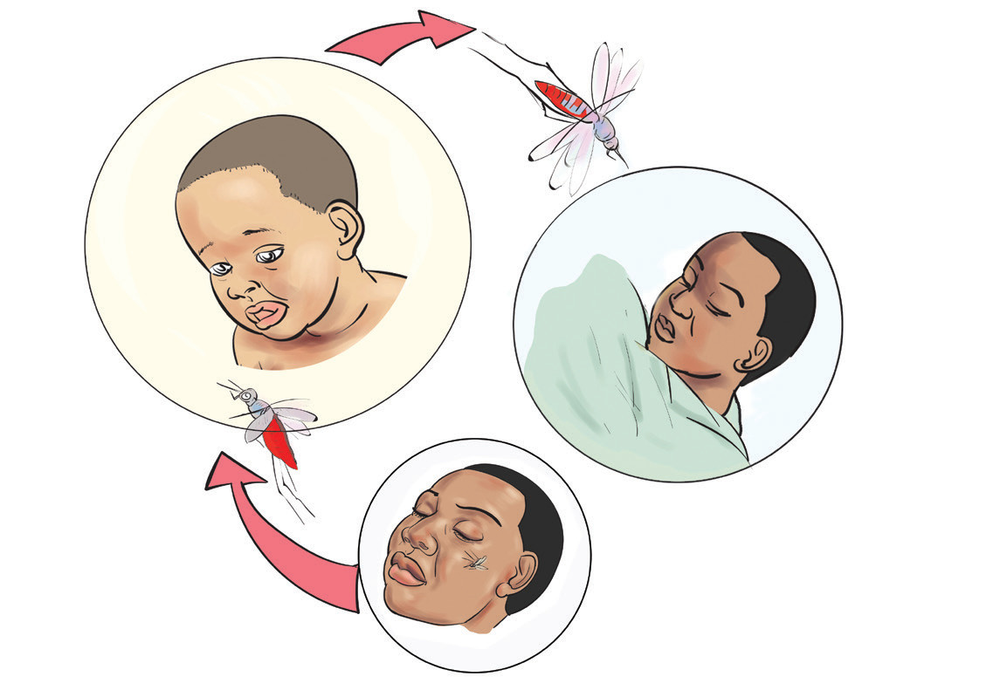

Malaria
Malaria ni ugonjwa unaosabishwa na vimelea.
Kuenea kwa malaria
Malaria inaenezwa na mbu jike anayeitwa anofelesi. Mbu huyo huambukiza malaria kwa kuingiza vimelea vya ugonjwa mwilini anapomuuma mtu. Kielelezo namba 1 kinaonesha jinsi mbu anavyoeneza ugonjwa wa malaria.

Dalili za malaria
Mgonjwa wa malaria hujisikia baridi, hutetemeka na kupata joto kali mwilini. Dalili nyingine ni kuumwa kichwa, kutapika, kupoteza hamu ya kula, na viungo vya mwili kukosa nguvu.
Namna ya kuzuia malaria
Ugonjwa wa malaria huzuiwa kwa kuharibu sehemu ambazo mbu huzaliana na kuishi. Sehemu hizo ni vichaka, nyasi, na maji yaliyotuama kwenye vidimbwi, vifuu vya nazi, matairi ya magari yasiyotumika yenye kutuamisha maji, na makopo.
Maji yaliyopo katika vidimbwi yanaweza kumwagiwa mafuta ya taa ili kuua mazalio. Pia, vifuu vya nazi na vifaa vingine vyenye mazalio vichomwe moto. Njia nyingine ni kutumia vyandarua vilivyowekwa dawa ya kuua mbu. Mtu anapohisi dalili za malaria anapaswa kuwahi hospitalini au katika kituo cha afya ili apate tiba sahihi.